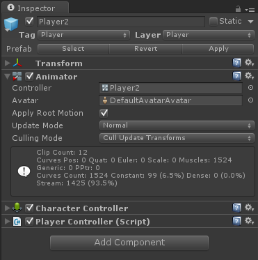
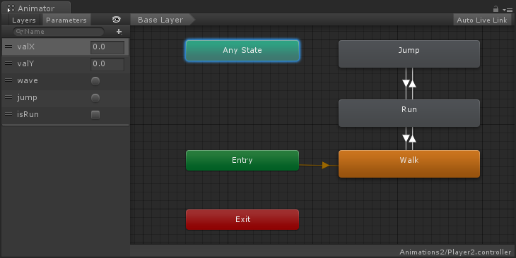

Unity3D的Mecanim动画系统之动画器组件和动画器控制器(一)
从这篇文章开始我会把我最近学习的有关Unity3D的新版动画系统Mecanim的学习笔记分享给大家，希望对大家的学习起到一些帮助
1. 动画器组件(Animator Component)
动画器组件引用动画器控制器 (Animator Controller)，该控制器用于对角色设置行为。

属性
|
属性： |
功能： |
|
控制器 (Controller) |
附加到此角色的动画器控制器 |
|
Avatar |
此角色的Avatar。 |
|
应用根运动 (Apply Root Motion) |
应从动画本身还是从脚本控制角色的位置。 |
|
更新模式 (Update Mode) |
Normal：与Update调用同步； Animate Physics：与FixedUpdate调用同步； Unscaled Time：与Update调用同步，但会忽略timescale |
|
剔除模式 (Culling Mode) |
Always Animate：不做任何剔除 Cull Update Transforms：重新定位，当不被渲染的时候进行剔除不可见的部分。 Cull Completely：当不被渲染的时候，动画被完全禁用 |
2. 动画器控制器 (Animator Controller)

有关动画控制器的更多内容会在下一篇文章介绍
如果您觉得本文不错，可以选择打赏。打赏多少，您高兴就行，谢谢您的支持！ ~(@^_^@)~